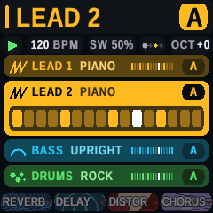
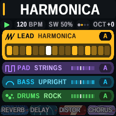
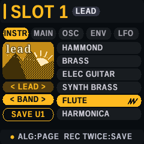
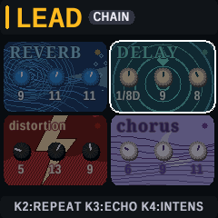
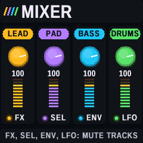
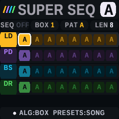

A whole band
in your pocket.
QUARTET turns the FM-1 into a four-track groovebox. Three synth slots, each a lead, a pad or a bass, plus a drum machine. Pick from 72 sounds and 23 kits, or save your own. Write patterns step by step or play them in live, put four pedals from a library of 30 on every track, and chain it all into songs.
Download How to install SourcePress PLAY as soon as it starts: a short demo groove is loaded in pattern A of each track.

The home screen: a pill per track, the chosen one open with its 16 steps; its pedals along the bottom.
What it does
Everything runs on the FM-1's own keys, knobs and buttons. No computer or app needed.
FOUR TRACKS
Three synth slots that you set to LEAD, PAD or BASS, so you can run two leads or three pads. Track four is always DRUMS.
72 SOUNDS, 23 KITS
Grouped by what they are: keys, band, synths and oddities for the lead; strings, keys, synths and atmospheres for the pads; acoustic, analog, digital and wild basses.
YOUR OWN SOUNDS
Tweak a sound in the editor and save it to the USER bank: 8 per type and 4 drum kits.
A REAL SYNTH
Two oscillators (including FM, pulse width and hard sync), a resonant filter, an envelope, an LFO and glide.
TEN PATTERNS EACH
A to J, one to four bars long. Notes have a length and an expression: soft, loud, short, punch, smooth, plucked.
30 PEDALS
Four slots per track: drives, filters, modulation, reverbs and delays, pitch and odd ones like Loose and Old Media.
PLAY IT LIVE
Live recording, an arpeggiator locked to the beat, beat repeat, a key lock and a mixer.
SONGS AND SAVES
SUPER SEQ chains the patterns into ten songs. Your work saves itself, and there are four save slots too.
Getting started
Five minutes from switching on to your own groove.
PLAY
Press PLAY to hear the demo. Each track plays its pattern A.
PICK A TRACK
Turn SELECT. The track's name shows at the top. Play the keys to hear it; on drums the first six white keys are the six drums.
PICK A SOUND
Turn ALGORITHM, a click per sound. The name shows big for a moment.
WRITE A PATTERN
Turn PRESETS to an empty pattern (B), press SEQ and play keys: each note goes in at the cursor.
ADD A PEDAL
Tap FX to switch its pedal on. Press EDIT twice to see all four of the track's pedals in a chain.
COME BACK
HOME always takes you back to the home screen. Your work saves itself two seconds after the music stops.
How the controls work
The same few rules hold on every page, so once you know one page you know them all.
SELECT
Always the track.
PRESETS
The pattern, or the page's own thing: the pedal on a pedal page, the song in SUPER SEQ.
ALGORITHM
Moves within the page: the cursor, the tab, the slot, the box. It never takes you to another page.
KNOB 1–4
The four settings shown on the page, left to right. Where there is an on/off switch, it is KNOB 1.
TAP OR HOLD
A tap switches something or opens it; holding half a second does the other. Pedal buttons and ARP: tap on/off, hold for the page.
REC TWICE
Anything that keeps or replaces your work asks first: saving a sound, a project, copying a pattern, clearing all.
PRESS AGAIN
A page's own button again moves on or closes it: EDIT sound → chain → home, SEQ recorder ↔ SUPER SEQ.
HOME
Home, from anywhere.
The band
Four tracks, each a pill in the colour of what it plays (gold lead, violet pad, cyan bass, green drums) with its sign: a sawtooth, an arch, a square wave, dots. The chosen track's pill lights up and opens out; a muted track turns red.
| Type | Plays |
|---|---|
| LEAD | melodies and riffs, up to four notes a step, an octave up |
| PAD | chords and pads, up to four notes a step |
| BASS | basslines, one note at a time, two octaves down |
| DRUMS | kick, snare, hat, open hat, clap and perc |
Synth slots
Tracks 1–3 start as LEAD, BASS and PAD, but each can be any of the three: press EDIT and turn KNOB 1 on the INSTR page. Two of a kind are numbered: LEAD 1 and LEAD 2 at the top, L1 and L2 on the home screen (likewise P1, P2, B1, B2). The patterns stay when a slot changes type; a BASS plays just the first note of each step.
The synths share nine voices: four for each LEAD or PAD, one for a BASS. With three LEAD or PAD slots, the busiest gives a voice or two up.
On the home screen
SELECT
The track.
ALGORITHM
Its sound, through every group in turn (drums: the kit).
PRESETS
Its pattern, A–J. Hold ARP and turn: copy it into the next letter.
KNOB 1
The tempo. (The sound itself is shaped in EDIT.)
KNOB 2
Swing, for the whole song: 50 % (straight) to 66 % (a heavy shuffle), a click a step; SW on the line under the title.
PLAY
Every track starts together from step one, or stops.
Each pill shows the track's name, its sound and its pattern; the chosen one opens out with the 16 steps of the page it is playing, big (the step playing white), the others show theirs as a thin strip. A>C means pattern C is queued after A: it starts when A comes round. The bottom line, set apart by a strip of black, shows the chosen track's four pedals, each a slice of its own case and art with a small LED: lit when it is on, dark (and the slice dimmed) when off.

Two leads: the PAD slot switched to LEAD.

Turn ALGORITHM: the sound's name shows.
Sounds
Each player's sounds come in four groups, by what they are, then USER. ALGORITHM on the home screen steps through all of a slot's sounds, group after group. Picking a sound loads its settings and replaces your tweaks, so save anything you want to keep.
| Lead | Sounds |
|---|---|
| KEYS | Piano, Xylophone, Music Box, FM Bell, Tine Keys, Clavinet |
| BAND | Hammond, Brass, Electric Guitar, Synth Brass, Flute, Harmonica |
| SYNTH | Mini Lead, Sync Lead, PWM Lead, Acid Lead, Chiptune, Porta Lead |
| ODD | Theremin, Glass Harp, Laser, Bowed Metal, Sine Swarm, Stepper |
| Pads | |
| STRINGS | Strings, Solina, Choir, Acoustic Guitar, Harp, Digital Choir |
| KEYS | Electric Piano, DX Piano, Organ, Handpan, Vibes, Marimba |
| SYNTH | Juno Strings, Poly Synth, PWM Pad, Prophet Brass, Warm Analog, Warm Synth |
| ATMOS | Drone, Frozen, Cathedral, Sweep, Glass Pad, Tidal |
| Bass | |
| ACOUSTIC | Upright, Slap, Plucked, Tuba, Fretless, Picked |
| ANALOG | Moog Bass, 303 Line, Sub Bass, Synth Bass, Rubber Bass, Slide Sub |
| DIGITAL | DX Bass, Reese, Electro Bass, FM, Deep Reese, Synth Pluck |
| WILD | Fuzz, Wobble, Growl, Bubble, Womp, Dirt Bass |
| USER | Your own: up to 8 per type. |
A sound from an older save that is no longer on the list still loads and plays as it did, and shows at the top of the list while it is chosen.
| Drums | Kits |
|---|---|
| GROOVE | Rock, Hip-Hop, Lo-Fi, Breaks, Jazz, Funk |
| MACHINES | CR-78, Mini Pops, LM-1, 606, 808, 909 |
| ELECTRO | Electro, Techno, Trap, House, Dub, Industrial |
| ODD | Toy, Glitch, Metal, Noise, Kitchen |
| USER | Your own: up to 4. |
The kits are synthesised, except the LM-1, which plays samples of a real Linn LM-1 (its CLAP and PERC keys are its low and high toms). PERC changes from kit to kit: a conga, a shaker, a tom.
The sound editor (EDIT)
Press EDIT for the SOUND page of the chosen track. It opens on INSTR, with the track's slot on top (SLOT 1–4, as on the home screen, and its type beside it): a sound browser with a picture for the type on the left, screen-printed in two inks like a pedal with the type's name lettered on it (mountains under a sun for lead, rings for pad, stacked blocks for bass, confetti for drums), under it the type (KNOB 1: lead, pad or bass) and the group (KNOB 2) as pills and the USER slot to save to (KNOB 4); on the right the group's sounds as pills (KNOB 3), the one playing filled in the track's colour. ALGORITHM chooses the page, KNOB 1–4 edit it, SELECT moves to another track. EDIT again opens the signal chain; HOME goes back.
| Page | KNOB 1 | KNOB 2 | KNOB 3 | KNOB 4 |
|---|---|---|---|---|
| INSTR | Type: lead, pad, bass | Group | Sound in the group | USER slot to save to |
| MAIN | Glide | Cutoff | Resonance | Filter envelope |
| OSC | Wave 1 | Wave 2 | Wave 2 tuning | Mix / FM amount |
| ENV | Attack | Decay | Sustain | Release |
| LFO | Rate | Depth | Target: pitch, filter, volume, PWM | Wave: tri, square, saw, random |
Waves: sine, triangle, saw, square, noise, FM, pulse (set the LFO target to PWM and its width sways) and sync (wave 2 only: hard sync, swept by the filter envelope for that screaming lead). Glide slides each note from the one before, from off up to about half a second.
Drums: the first page is KIT (group, kit, USER slot), then a page per drum (BD SD HH OH CP PC) with its pitch, decay and level on KNOB 1–3.
The signal chain (EDIT twice)
The track's four pedals as cards, in the order the sound flows through them (FX, SEL, then ENV, LFO), a pedalboard: each card is the pedal itself, a window of its art behind its lettered name, its LED and three small knobs with their values. A pedal that is off goes dark, its LED out; the chosen card is framed white. ALGORITHM moves between them, KNOB 2–4 turn the chosen pedal's knobs (named on the bottom line); KNOB 1 switches it on or off, and PRESETS swaps it for another pedal from the whole library, category by category. EDIT once more goes home.
Saving your own sound
Tweak the sound, go to INSTR (or KIT), choose a USER slot with KNOB 4 and press REC twice (the bottom line asks first). SAVED USER 3 shows, and the track now plays your sound from the USER bank. Saving over a used slot replaces it. The USER bank is kept with your work and inside each saved project, and clear all leaves it alone.

INSTR: the type's picture, the type and group, the sounds.

OSC: two pulse waves.

Drums: the KIT page.

The signal chain: EDIT twice.
Writing patterns
Each track has ten patterns, A–J, from one to four bars (16 to 64 steps; a step is a 16th note). Choose one with PRESETS. While playing, the change waits until the pattern playing comes round.
The step recorder (SEQ)
Synths show a piano roll: notes as bars as long as they sound, the cursor as a column in the track's colour. The line above the roll shows what each knob holds; the bottom line shows where the cursor is and the note length in words (STEP 7/16 K2: QUARTER).
ALGORITHM
Move the cursor, a step a click, through every bar.
Keys
Write a note at the cursor; the cursor jumps past it. Hold keys together for a chord (up to four, LEAD and PAD).
KNOB 1 · BARS
The pattern's length: 1, 2, 3 or 4 bars.
KNOB 2 · LEN
How long the note lasts: 1/16, 1/8, dotted 1/8, 1/4, dotted 1/4, 1/2, dotted 1/2, a whole bar. Changes the note at the cursor and the ones you write next.
KNOB 3 · EXP
The expression, how it's played: NORMAL, SOFT, LOUD, SHORT (half a step), PUNCH (louder, brighter), SMOOTH (on into the next note, which glides on without a new attack) or PLUCKED (dying away by itself). Again for the cursor's note and the next ones.
KNOB 4 · NOTE
Move the cursor's note (or chord) up or down a semitone. When stopped, you hear it.
ARP
Tap: a tie, the note before lasts a step longer. Hold half a second: a rest, the step cleared.
REC
Tap: live recording. Hold one second: clear the pattern.
SEQ
Tap: SUPER SEQ. Hold half a second: copy a pattern into this one (below).
The top right cell names the cursor's note: a note name, HELD (inside a longer note) or REST. A new note cuts off any note it would overlap. While the music plays, a long pattern is followed bar by bar, except for three seconds after you move or write.

The step recorder: BARS, LEN, EXP and the note.

Drums: a row per drum, the chosen one lit.

Live recording.
Drums
In the step recorder the first six black keys choose a drum (and play it), and the 16 white keys switch its steps on and off for the bar shown. KNOB 4 or OCT- OCT+ turn the bar, KNOB 1 sets the length. KNOB 3 sets the expression of new hits (on drums SHORT and PLUCKED choke the hit, SMOOTH lets it ring); hold a hit's white key and turn it to change that hit. Softer and shorter hits look dimmer, punchy and loud ones get a white mark.
Live recording
Press REC in the step recorder: LIVE shows and SEQ blinks. Tap REC and play: the music starts if it was stopped, and your notes go into the pattern playing, each on the nearest 16th, added to what is there. Tap REC again to stop recording while the music goes on. Hold REC one second to clear the pattern. KNOB 1–3: bars, cursor, bar shown.
Copying a pattern
Hold SEQ in the step recorder (or the live page) for the copy page: every track's patterns A–J. A pattern with notes is tinted, an empty one dark, and the pattern you are editing is framed white: that is where the copy goes. SELECT picks the track to copy from (the synths copy from each other, so the pads can take the lead's tune; drums copy from drums) and PRESETS or ALGORITHM the pattern. REC asks, REC again copies, notes, lengths, expression and all, and takes you back. SEQ goes back without copying.

Copying PAD's pattern A into LEAD's pattern B.
Pedals
FX SEL ENV LFO are four pedal slots for the chosen track, and each holds any pedal from a library of 30. Tap a button to switch its pedal on or off (its name shows: GLITCH ON; lit = on). Hold it half a second to open the pedal. To see and set all four at once, press EDIT twice for the signal chain.
Every pedal is drawn like a screen-printed boutique pedal, with its own art across the case: a storm and a lightning bolt on Distortion, a volcano on Fuzz, a lighthouse on Tremolo, ripples on Delay, a night swirl on Reverb, a comet on Shimmer, tape reels on Tape Echo, a melting clock on Loose, confetti on Glitch, and so on. Its name is lettered on the case, its three knobs are coloured knurled caps or black skirted ones with their names and values underneath (digital pedals in %), and its LED glows when it is on; off, the LED goes dark with OFF beside it. The arpeggiator has a page of its own in the same style.
| PRESETS | The type (category), shown beside the track's name. |
| ALGORITHM | The pedal within it. |
| KNOB 1 | The switch: a click clockwise on, anticlockwise off. |
| KNOB 2–4 | The pedal's three knobs (most run 0–20). |
| HOME | Back home. |
| Category | Pedals |
|---|---|
| DRIVE | Distortion · Overdrive · Fuzz · Octave Fuzz · Wavefolder · Bitcrusher |
| FILTER | Filter Seq (steps in time) · Wah (opens as you play harder) |
| MODULATION | Chorus · Phaser · Flanger · Tremolo · Slicer (chops in time) · Vibrato · Pump (ducks on every kick) |
| SPACE | Reverb · Delay · Tape Echo · Shimmer · Reverse Delay · Spring Reverb |
| PITCH | Shifter (up or down) · Harmonizer (a second note at an interval) |
| OTHER | Old Media (worn tape and records: wobble, hiss, crackle) · Glitch · Underwater · Synth · Lo-Fi · Loose (late notes, and a second player a step behind) · Music Box |
Space pedals are shared: one of each for the whole band. Each track sets how much it sends; the other two knobs change the shared pedal for everyone. All the other pedals belong to their slot. A pedal already in another of the track's slots isn't offered again (nor Glitch beside Loose). A new project starts with Reverb, Delay, Distortion and Chorus.
PLAY to stop silences every pedal at once: no echo or late note carries on.

The ENV slot holding a Distortion, switched on.
Performing
Arpeggiator (ARP)
Plays held notes, and the pattern's chords, one after another, locked to the beat. Like a pedal button: tap ARP to switch it on or off (ARP ON shows), hold it half a second for its page.
| KNOB 1 | On / off. |
| KNOB 2 | Rate: 1/4 to 1/32. |
| KNOB 3 | Octaves: 1 to 4. |
| KNOB 4 | Direction: up, down, random. |
Beat repeat (hold GLO)
Hold GLO while playing: the slice playing goes round until you let go, then the music carries on where it would have been. Meanwhile the first five white keys choose the slice: 1/2 bar, 1/4, 1/8 (to start), 1/16, 1/32.
Mixer (GLO)
A channel per track, each with a knurled knob in the track's colour: KNOB 1–4 set the volumes of the four tracks, the value under the knob and a column of LEDs showing the level (amber, then red, near the top). Here FX SEL ENV LFO mute them: the LED by the button's name glows while the track plays and goes dark (the name red, MUTE under the knob) when muted. Tap GLO again for the KEY page, and again to go home.
The KEY page
The key, its relative minor and its signature, and an octave of keyboard with the key's notes lit and named. ALGORITHM picks the key, KNOB 1 LOCK (the keys play only the key's notes) and KNOB 2 LIGHTS (the key's notes glow on the keys).

The arpeggiator.

The mixer.

The KEY page.
Songs and saving
SUPER SEQ
Press SEQ twice (the step recorder, then SUPER SEQ). There are ten songs, A–J; each track has its own row of up to eight boxes. A box plays its pattern once, then the next box; each track moves on at its own pattern length.
- A–J: play that pattern. Blank: the pattern before goes on (blanks at the start are silent). X: a rest.
A...B.A.plays A A A A B B A A.
| SELECT | The track's row. |
| KNOB 1 | SUPER SEQ on / off. On, it picks the patterns instead of PRESETS. |
| ALGORITHM or KNOB 2 | The box. |
| KNOB 3 / 4 | The box's pattern (blank, A–J or X) / the song's length (1–8 boxes). |
| PRESETS | The song. Hold ARP and turn: copy it into the next letter. |
Saving (SAVE)
Your current work saves itself. For keeps there are four slots: ALGORITHM or KNOB 1 picks one, REC twice saves, PLAY twice loads (the second press within three seconds; any other button cancels). A slot holds everything, your USER sounds included. Saving and loading stop the music. Saves from earlier versions of QUARTET still load.
MIDI
Hold HOME and turn PRESETS for the MIDI channel (or OMNI). MIDI notes play the chosen track.

SUPER SEQ: a row per track.

The save page.
All controls
Anywhere
| PLAY | Start (from step one) and stop. |
| SELECT | The track. |
| PRESETS | Its pattern, A–J. Hold ARP: copy into the next letter. Hold HOME: the MIDI channel. |
| FX SEL ENV LFO | Tap: the pedal on / off. Hold 0.5 s: the pedal's page. |
| EDIT | The sound editor (from INSTR); again: the signal chain; again: home. |
| SEQ | The step recorder; again: SUPER SEQ; again: back to the step recorder. Held in the step recorder: the copy page. |
| ARP | Tap: on / off. Hold 0.5 s: the arpeggiator's page. |
| GLO | Tap: the mixer, then the KEY page, then home. Hold: beat repeat. |
| SAVE | The save page (again: close). |
| HOME | Home. |
| OCT- OCT+ | Tap: the keys' octave (drum step recorder: the bar). Hold 0.5 s: the pattern being edited moves down / up an octave. |
| MASTER | The volume. |
Home screen
| ALGORITHM | The sound or kit, through every group. |
| KNOB 1 / 2 | Tempo / swing (50–66 %). |
| REC | Hold 1 s, then REC again: clear everything. |
Sound editor
| ALGORITHM | The page: INSTR, MAIN, OSC, ENV, LFO (drums: KIT, then each drum). |
| KNOB 1–4 | The page's four settings. |
| REC twice | On INSTR / KIT: save to the USER slot. |
Signal chain
| ALGORITHM | The pedal slot. |
| PRESETS | Another pedal in that slot. |
| KNOB 1 / 2–4 | On / off / its three knobs. |
Copy page
| SELECT / PRESETS | The track / the pattern to copy from. |
| REC twice | Copy it into the pattern being edited. |
| SEQ | Back, without copying. |
Step recorder
| KNOB 1 / 2 / 3 / 4 | Synths: bars / note length / expression / note up-down. Drums: bars / – / expression / bar shown. |
| ALGORITHM | The cursor. |
| Keys | Synths: write notes (held together: a chord). Drums: black keys choose the drum, white keys switch steps. |
| ARP | Tap: tie. Hold: rest. |
| REC | Tap: live recording. Hold 1 s: clear the pattern. |
| SEQ | Tap: SUPER SEQ. Hold: the copy page. |
Live recording
| REC | Recording on / off (starts the music if stopped). Hold 1 s: clear the pattern playing. |
| KNOB 1 / 2 / 3 | Bars / cursor / bar shown. |
Pedal and arpeggiator pages
| PRESETS / ALGORITHM | Pedal: the type / the pedal within it. |
| KNOB 1 | On / off. |
| KNOB 2 / 3 / 4 | The pedal's three knobs; arpeggiator: rate / octaves / direction. |
SUPER SEQ, mixer, KEY and save page
| SUPER SEQ | KNOB 1–4: on-off / box / its pattern / length. ALGORITHM: the box. PRESETS: the song. |
| Mixer | KNOB 1–4: the volumes. FX SEL ENV LFO: mute. |
| KEY | ALGORITHM: the key. KNOB 1: lock. KNOB 2: lights. |
| Save page | ALGORITHM or KNOB 1: the slot. REC twice: save. PLAY twice: load. |
Gallery